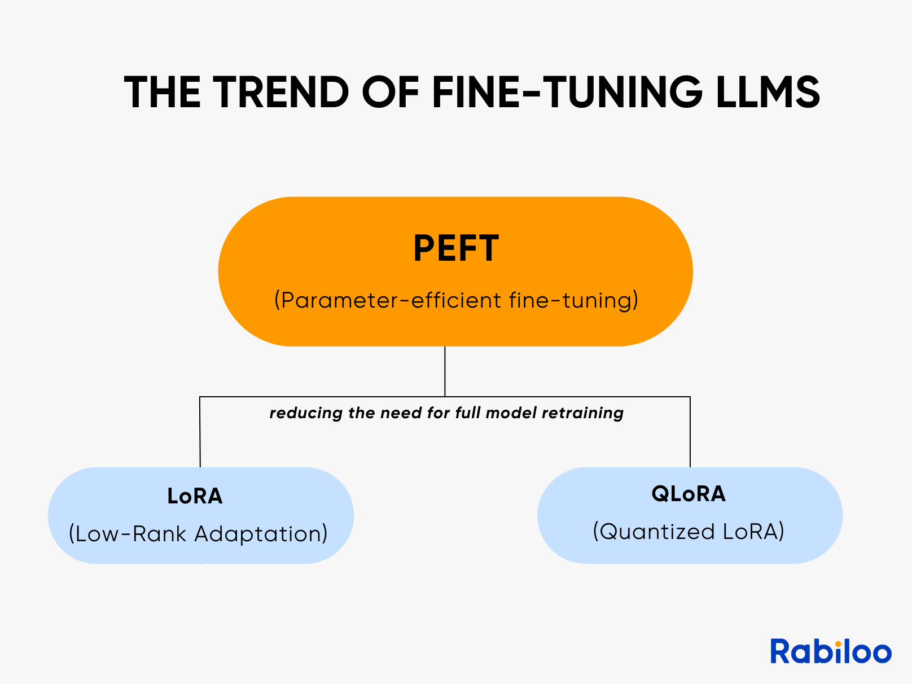

Method 2: Parameter-Efficient Fine-Tuning (PEFT)
- PEFT addresses the resource challenges of full fine-tuning.
- Content 2
- It works by freezing most of the model's parameters and only updating a small, manageable subset.
- This dramatically reduces memory requirements and helps prevent catastrophic forgetting.
- LoRA and QLoRA are the most widely used and effective PEFT methods today.
